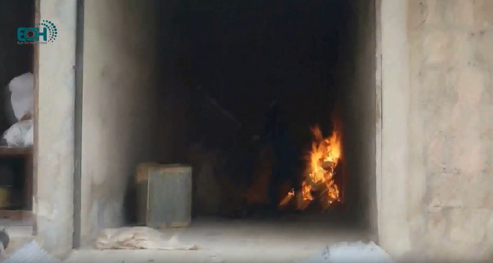
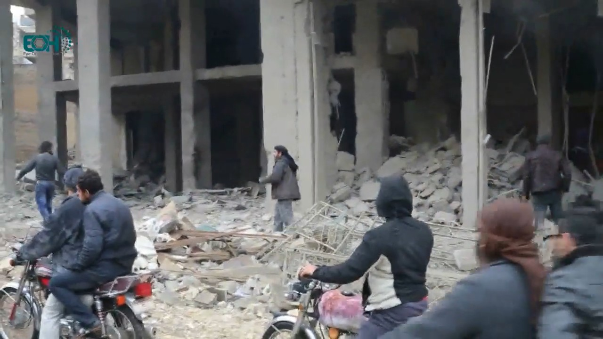
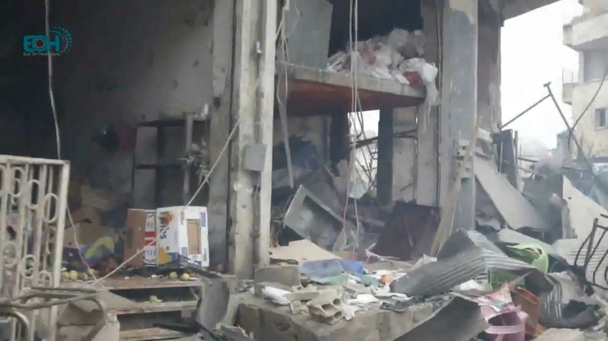
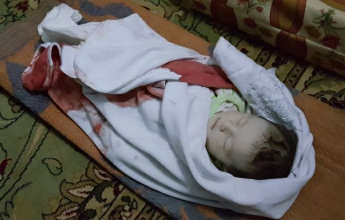
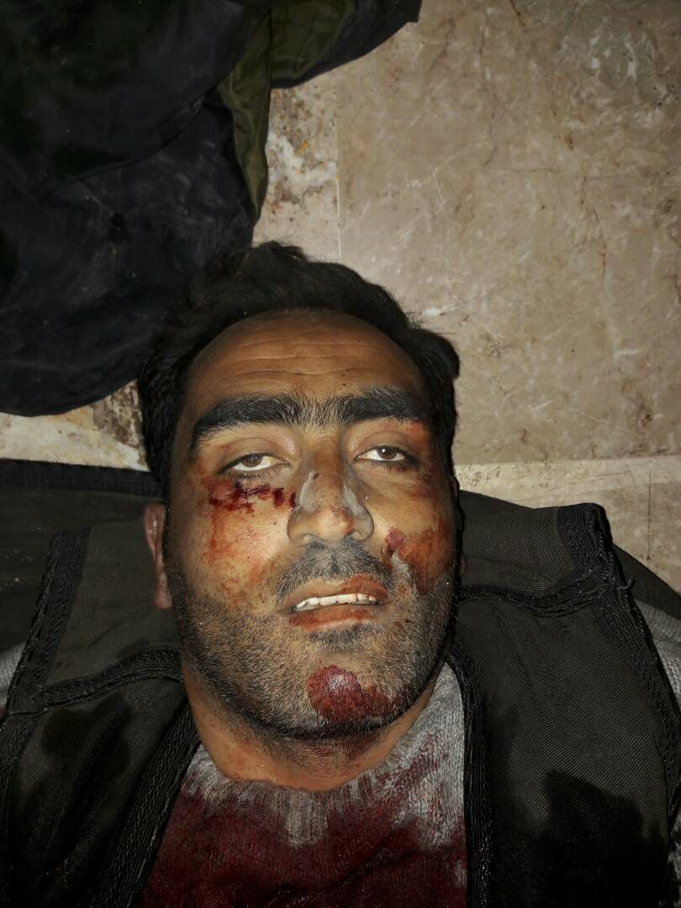

Al-Salaam Hospital is out of service now
- Location: Maarat al-Numaan (Idlib governorate, Syria)
- Claimed targets: Al-Salaam hospital
- Date: 03 January 2018
- Reported killed: 5 killed
- Reported injured: ?? injured
- Munitions identified: ??
- Potentially responsible: Russian or Syrian Air Force

Background of Maarat al-Numaan
Maarat al-Numaan (also known as al-Maarra) is a city located 33 km south of Idlib, with a population of about 58,008 (2004 census), and so it’s considered as the second largest city in Idlib. Al-Maarra has a long history, and its museum has mosaics from Dead Cities, which date back to 1st to 7th centuries.
The first demonstration there took place On 25 March 2011, which called for freedom and Daraa, the city swiftly became an important hub for organizing protests. The tenth month of 2012 saw the control of Free Syrian Army (FSA) on Maarat al-Numaan and since that date the city still out of the Syrian regime.
On 13 March 2016 al-Nusra Front and Jund al-Aqsa attacked the Free Syrian Army’s Division 13 in Maarat al-Numaan, overrun their depots, killing 4 of combatants and wounding as many as 20 others during the battle. Two Division’s storage facilities that filled with the U.S. manufactured anti-tank TOW missiles were surrendered to the al-Nusra. Ahmad al-Saaoud, a Syrian rebel commander, said the attackers had seized light weapons and ammunition from his group but had not managed to capture any TOW anti-tank missiles.
Civilian opposition against al-Nusra continued for several months in al-Maarra, until 6 June 2016 where the clashes broke out again. On 9 June, an agreement was signed between the Free Idlib Army and Tahrir al-Sham, which requires the Division 13 to be knocked down, the Free Idlib Army will also take over all the headquarters of Division 13 except one which will be managed by Tahrir al-Sham.
Al-Salaam Hospital
Al Salaam Hospital is a maternity hospital, which founded in 1995 in Maarat al-Numan. It contains all medical departments, including women’s clinics, orthopedics, and general surgery.
Before Jan 03 2018, the hospital treats approximately 8,000 to 9,000 patients per month. Last month, the hospital delivered 674 babies, and the total number of beneficiaries from its services reached 8670 patients, including 1789 in the internal clinic, 3356 in the pediatrics clinic, 2668 in the women’s clinics, and hundreds of other patients in different clinics.
Al Salaam Hospital is the only maternity hospital in Maarat al-Numan, providing emergency services, medical consultations, as well as deliveries.
Previous Attack on Idib’s Hospitals
The Syrian Archive has done in-depth two open source analysis about targeting medical facilities in Idlib governorate. The first one was entitled Medical Facilities Under Fire which addressed targeting eight hospitals and medical points including The national hospital of Marret Numan whose beneficiaries was estimated about 500,000 people. The second report was under the heading Three Idlib Medical Facilities Attacked and provided overviews of visual content regarding attacks targeted some of Idlib’s hospital and medical points.
This report presents an in-depth analysis of the last attacks on al-Salaam hospital especially the last one which led to becoming out of order.
De-escalation zone
On 4 May 2017, the sponsoring states of Astana Talks (Russia, Turkey, and Iran) signed a memorandum of understanding for the establishment of de-escalation zones in Syria for at least six months, which was extended at Astana 7 on 31 October 2017. The Russian Ministry of Defense published a map showing the locations included in this memorandum as shown below (de-escalation zones in blue, ISIS in grey, Syrian army in orange). See below:


These areas included Idlib province, some parts of northern Homs province, as well as some parts of adjacent provinces (Latakia, Hama, and Aleppo), Eastern Ghouta in Damascus countryside and some parts of southern Syria.

A zoomed in look at the Russian Ministry of Defense’s map (above) clearly shows that the bombed location in Maarat al-Numan city is part of the de-escalation zone established during the Astana talks.
What Happened?
On 03 Jan 2018 between 11:38 and 12:00, al-Salaam hospital in Maarat al-Numan was attacked allegedly by Russian air force. The hospital served approximately 500,000 people. Al-Salaam hospital was previously attacked three times since 30 Dec 2017, addressed in a report published by the Syrian American Medical Society (SAMS) who supported the hospital. The report stated that the airstrikes ‘killing five people, including a newborn baby girl and her father, and injuring many more’.
SAMS published a video on their Facebook page showing the hospital from the inside immediately after the attack. In the evening SAMS reported: “Al-Salaam hospital in Maarat al-Numan was becoming out of order, after violent attacks against it caused significant material damage, and its medical staff and patients were evacuated. A newborn baby girl was killed two hours later after she has been born in the hospital and another was injured as a result of the shelling.”
Thiqa agency published a video on their YouTube channel showing the destruction of the hospital. See still below:


In an interview from the video, one of the medical staff stated: “Russian aircraft targeted al-Salaam hospital after the Duhur prayer [noon prayer], which resulted in becoming the hospital out of order, we have ten injuries, including three children.”
Hadi Alabdallah also published a video showing the destruction in the incubators section of the hospital, see below:

Alabdallah interviewed with one of the hospital doctors who stated in the video: “We were in the operations room when we surprised by a huge explosion caused by two missiles. We went out immediately to see the casualties. We had five victims and a number of wounded, in addition to extreme physical damage.”
RFS Media also published a video showing the destruction in the front of the hospital, see below:

The video also features an interview with a member of Syrian Civil Defence rescue team, who said: “The warplanes launched heaviest attacks on several areas in the southern countryside of Idlib. We are now in al-Salaam hospital in Maarat al-Numan, a civilian hospital, which was targeted by airstrikes, resulting in five victims and ten wounded”.
Maara Media Center (MMS) published a video by Mohamed Aldaher showing the destruction outside of the hospital. See stills below:


The video conducted an interview with one of Syrian Civil Defence rescue team who stated: “Russian warplanes targeted Maarat al-Numan city with two air strikes targeting al-Salaam hospital and some shops surrounding it, killing six civilians.”
Eye On Homeland (EOH) also published a video on their youtube channel showing the outside of the hospital, where the attack has caused a big destruction of shops surrounding al-Salaam hospital, see belows:





Edlib Media Center also published a video showing the first moments after the attack, see below:

Where did it happen?
Al Jazeera has published a video, after the attack, showing rubble removal activities around the hospital, by Syrian Civil Defense rescue.
The Syrian Archive team was able to geolocate several landmarks and building using the above video and Google Earth, thus confirming that the targeted location was the al-Salaam hospital and its surroundings. The below stills were taken from inside and outside the hospital:


We can compare these landmarks with the image below from Google Earth:

Also, we can compare the geolocation with the following satellite image taken from XXXX:

When did it happen?
According to some testimonies in the previous videos, the airstrike took place after the noon prayer, which was held around 11:38 AM on 03 Jan 2018.
At 11:48 AM on 13 January, citizen reporter, based in Marrat al-Numan, Anas Al Marwai, published a video on his Facebook page showing the destruction around the al-Salaam hospital, see below:

Another Citizen reporter Mutie Jalal also published a tweet at 11:55 AM about the attack saying “Two Russian airstrikes on Sarakib and one on Maarat al-Numan and another one on Muharram”:
غارتين من الطيران الروسي على #سراقب وغارة على #معرة_النعمان وأخرى على #معر_حرمة
— مطيع جلال (@shamalmjd1) January 3, 2018
Hadi Alabdallah published another video showing the destruction of shops around the hospital, see below:

In the video, Hadi said “Although it’s raining and the sky is full of clouds, but the Russian warplanes do not stop flying and bombing in the areas of Idlib countryside,”, returning to the weather forecast on 03 January we find XXXXXX
Flight Analysis Data
To provide a further layer of verification, the Syrian Archive cross-referenced findings from the videos and witness testimony with flight observation data from a spotter organization. This process necessitated analyzing observation data for flights between 11:00 and 14:00, the period directly before and after the reported attack between 11:30 and 11:45 as was claimed by media activists. See belows:


Through comparing where flights were observed, the type of aircraft observed, the time flights were observed, and the direction flights were heading, and comparing this data to geolocation conducted in earlier steps, the Syrian Archive was able to identify several flights potentially responsible for the attack (several fixed-wing Russian aircraft), seen circling in the immediate vicinity of the geolocated attack site. Previous research has found that circling flights typically indicate target acquisition and/or preparation for an imminent attack.
While there is no direct evidence available that one of the observed aircrafts was involved in the attack on Atarib, the presence of these aircrafts increase the likelihood that an air attack occurred at this location and the time stated by the citizen reporters as well as humanitarian groups, and estimated also using imagery from the attack.
Some of killed civilians names and pictures:
On his Facebook page, Anas Al Marwai published a photo of a newborn babay girl named “Tal Firas Al Omar”, said that she died an hour after she was born in Al Salaam Hospital, as a result of the bombing in the area by Russian warplanes, see below:

Mukhils Kahttab, a citizen-based in Marrat al-Numan, published a photo on his Facebook page to what he said it was “to his nephew, who killed as a result of the al-Salaam hospital targeting.” see below:

The Syrian archives team could not find other names for the victims ??
About the authors
The Syrian Archive is a Syrian-led initiative striving to promote sustainable peace and respect for human rights within Syrian society through facilitating justice and accountability efforts. This includes evidence gathering and documentation of incidents; the acknowledgment that war crimes and human rights violations have been committed by all parties to the conflict; the identification of perpetrators to end the cycle of impunity; and the development of a process of justice and reconciliation. Through collecting, verifying, curating and investigating visual content, the Syrian Archive aims to preserve data as a digital memory to establish a database of human rights violations, and to act as a tool for legally implementing justice and accountability efforts as concept and practice in Syria.
Since its founding in 2014, the Syrian Archive has collaborated with organizations including Human Rights Watch (HRW), Amnesty International, Berkeley University and Essex University, Witness, Bellingcat and various agencies of the United Nations (UN), specifically the Independent International Commission of Inquiry on the Syrian Arab Republic.
Errors, corrections, and feedback
The authors of this report have strived for accuracy and transparency of process in reporting and presentation while balancing the need to protect the safety of those providing documentation in some instances. With these interests in mind, detailed methodologies for some information deemed sensitive have not been published.
With that said, while all efforts have been made to present our best understanding of alleged incidents, it is recognized that the publicly available information for specific events can at times be limited.
If readers have new information about particular events; find an error in our work - or have concerns about the way we are reporting our data - please do engage with us. You can reach us at info@syrianarchive.org.